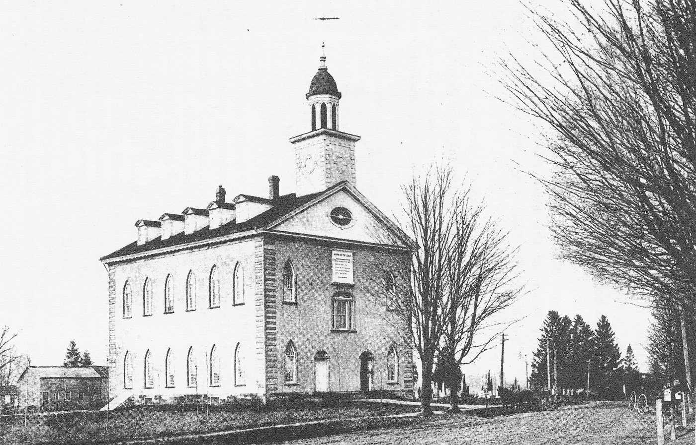

The Lord's House
Behold, I will send my messenger, and he shall prepare the way before me: and the LORD, whom ye seek, shall suddenly come to his temple.
Malachi 3:1
“A House of God”
The Kirtland years began with grief. On April 30, 1831, three months after arriving in Ohio, Emma gave birth to twins, a boy and a girl. Both died within hours. The next day, a neighbor in the church, Julia Murdock, died after giving birth to twins of her own. Her husband, John, left with five children and no wife, gave the newborns to Joseph and Emma to raise. For the first time, the Smiths had living children in their home.1
The church grew around them. Revelations came almost monthly, and many of them are now in the Doctrine and Covenants. In December 1832, one of the longest of them, which Joseph called “the olive leaf,” gave a commandment that would shape the next four years:
Organize yourselves; prepare every needful thing; and establish a house, even a house of prayer, a house of fasting, a house of faith, a house of learning, a house of glory, a house of order, a house of God.2
A month later, on January 22, 1833, the first session of what Joseph and his contemporaries called the School of the Prophets opened in an upper room of Newel K. Whitney’s store. Men preparing for missions studied scripture, doctrine, and even grammar and geography, and they prayed together and washed one another’s feet. The name, the Church’s historians note, called to mind the “company of the prophets” gathered around Samuel, Elijah and Elisha in the Hebrew Bible.3 But a room above a store was not the house the revelation described. That would take a great deal more.
Hiram
In January 1832 Joseph, Emma and the twins were living with John and Elsa Johnson in Hiram, Ohio, about thirty miles south of Kirtland. On February 16, in an upstairs room of the Johnson home, Joseph and Sidney Rigdon received together a vision that changed how Latter-day Saints think about heaven. They saw that there is not one heaven and one hell, but kingdoms of glory, prepared for God’s children according to how they lived and what they received. At the center of the vision was its testimony of Christ:
And now, after the many testimonies which have been given of him, this is the testimony, last of all, which we give of him: That he lives!
For we saw him, even on the right hand of God.4
Some of those in the room said that when it was over, Sidney looked limp and pale. Joseph smiled and said, “Sidney is not used to it as I am.”5
A month later came the opposite. One night in late March, a mob of men with blackened faces broke into the Johnson house. Joseph had been sitting up with the sicker of the twins, who both had measles, until Emma took the baby so he could rest. The men dragged him out into a meadow, choked him until he passed out, beat him, tore off his clothes, and covered him in hot tar and feathers. They forced tar into his mouth and chipped one of his teeth. Sidney Rigdon was dragged out by his heels, his head bouncing on the frozen ground. When Joseph stumbled back to the house, Emma fainted at the sight of him. Friends spent the night scraping the tar from his skin.6

The next morning, a Sunday, Joseph preached as usual. Some of the mob sat in the congregation. He said nothing to them. That afternoon he baptized three people. But the baby he had been holding, little Joseph Murdock Smith, grew worse after the cold night air rushed into the house, and he died later that week.7
“Shall We … Build a House for Our God of Logs?”
When the brethren met to discuss the building, Lucy remembered, some wanted a frame house and some a log one. Joseph listened to them all and then spoke. They were not building a house for man, but for God, “and shall we brethren,” he asked, “build a house for our God of logs? No, I have a better plan than that: I have a plan of the house of the Lord given by himself.”8

The site they chose was the corner of a wheat field the Smith brothers had planted the fall before. “In a few minutes the fence was removed,” Lucy wrote, “and the standing grain was levelled in order to prepare a place for the building; and Hyrum commenced digging a trench for the wall, he having declared that he would strike the first blow upon the house.”9 The cornerstones were laid on July 23, 1833.10
The Saints were poor, and few. Lucy said “not 30 families now remained in Kirtland” when the work began, most of the others having gone on to Missouri. Yet “they never suffered the work to stop untill it was accomplished.”11 Men cut sandstone at a quarry about two miles south and hauled it in wagons. The rough, irregular blocks were laid in mortar to make thick walls, which were then covered with plaster inside and stucco outside. A sawmill run by volunteers cut the wood. Skilled carpenters, among them a young convert named Brigham Young, did the finish work.12 Children gathered discarded shards of crockery and china, and broken glassware was mixed into the last coat of stucco so the walls would glisten.13 Picture a few children with a basket between them, going from door to door asking for a cracked cup or a broken bottle.† When the stucco was done, the walls were tinted a soft bluish gray, and lines were painted on them to look like blocks of cut stone.
Lucy’s own house was a boardinghouse for the workers. Young women boarding with her spent their days “making and mending clothes for the men, who were employed on the house.” “There was but one main spring to all our thoughts and actions,” she wrote, “and that was, the building of the Lord’s House.” She remembered how often she had “parted every bed in the house for the accomodation of the brethren,” while she and her husband slept on a single blanket on the floor, “while Joseph and Emma slept upon the same floor, with nothing but their cloaks for both beds and bedding.”14
There was opposition, too. The walls had to be guarded at night. Lucy borrowed the words of a psalm for the builders: they “Gave no sleep to their eyes, nor slumber to their eyelids, until they found a place for the Lord, a habitation for the mighty God of Jacob.”15
Trouble in Zion
Meanwhile, far to the west, the Saints in Jackson County, Missouri, were suffering. They had begun settling there in 1831, believing it the place for the city of Zion. Their neighbors grew alarmed at their numbers, their religion, and their antislavery reputation. In July 1833 a mob destroyed the church’s printing office in Independence. By November the Saints had been driven out of the county altogether. “It is a horrid time,” William W. Phelps wrote to Kirtland on November 6. “Men, women, and children are fleeing, or preparing to, in all directions.”16

In the spring of 1834 Joseph led about two hundred thirty men, women and children on a thousand-mile march to Missouri to help restore the Saints to their land. The expedition, called the Camp of Israel and known today as Zion’s Camp, did not accomplish that goal. Cholera broke out at the end, killing thirteen members of the camp and two Missouri Saints. But many of the men who would lead the church for the next half century were tested and trained on that march.17
The temple in Kirtland rose through all of it.
“My Brother Alvin”
By January 1836 the inside of the temple was nearly finished. On the afternoon of January 21, Joseph met with his counselors and his father in the unfinished building for sacred washings and anointings, patterned, as Saints notes, on the way Moses washed and anointed Aaron and his sons.18 Joseph Sr. anointed his son’s head and blessed him.
Then the heavens opened. Joseph saw the celestial kingdom of God, its gate “like unto circling flames of fire,” and God the Father and his Son on their thrones. And he saw people he knew:
I saw Father Adam and Abraham; and my father and my mother; my brother Alvin, that has long since slept;
And marveled how it was that he had obtained an inheritance in that kingdom, seeing that he had departed this life before the Lord had set his hand to gather Israel the second time, and had not been baptized for the remission of sins.19
Twelve years earlier Alvin had urged his little brother from his deathbed to “do every thing that lays in your power to obtain the record.” He had died unbaptized, and Joseph had carried the question of his fate ever since. Now the answer came:
All who have died without a knowledge of this gospel, who would have received it if they had been permitted to tarry, shall be heirs of the celestial kingdom of God;… For I, the Lord, will judge all men according to their works, according to the desire of their hearts.20
It was a doctrine of breathtaking generosity, and it would grow. God’s judgment would not be cut off by the accident of where or when a person was born. The vision also taught Joseph that little children who die “are saved in the celestial kingdom of heaven.” He and Emma had buried four infants by then.21
Hosanna
On Sunday, March 27, 1836, the temple was dedicated. People began lining up early in the morning. About a thousand crowded into the lower hall, and so many were turned away that an overflow meeting was held next door.22 Sidney Rigdon preached for more than two hours. Then Joseph rose and offered a dedicatory prayer, which he had received by revelation and which is now section 109 of the Doctrine and Covenants.

“We ask thee, O Lord, to accept of this house,” it began, “the workmanship of the hands of us, thy servants, which thou didst command us to build.”23 He prayed for the missionaries, for the Saints driven from Missouri, for the leaders of the nations. And then, in a passage that Jewish readers may find surprising in a frontier Christian prayer, he prayed for the Jewish people and for Jerusalem:
But thou knowest that thou hast a great love for the children of Jacob, who have been scattered upon the mountains for a long time, in a cloudy and dark day.
We therefore ask thee to have mercy upon the children of Jacob, that Jerusalem, from this hour, may begin to be redeemed;
And the yoke of bondage may begin to be broken off from the house of David;
And the children of Judah may begin to return to the lands which thou didst give to Abraham, their father.24
This was 1836. There was no Zionist movement and no talk of a Jewish return outside synagogue prayers. Yet in the first temple of the Restoration, a prophet from Vermont prayed that the children of Judah would come home.
When he finished, the choir sang a new hymn by W. W. Phelps:
The Spirit of God like a fire is burning; The latter-day glory begins to come forth. The visions and blessings of old are returning; The angels are coming to visit the earth.25
Then the whole congregation rose and shouted together, three times: “Hosanna! Hosanna! Hosanna to God and the Lamb!”26
The weeks that followed felt to many like the day of Pentecost. That evening men spoke in tongues and prophesied, and some reported seeing angels. People outside said they saw a bright cloud and a pillar of fire resting over the temple.27
Among those listening that day were the members of the new Quorum of the Twelve Apostles, called the year before. When they were set apart in 1835, Joseph had told them that they alone held the authority to unlock the doors of the nations for the gathering of Israel.28 One of them, a thirty-one-year-old former store clerk named Orson Hyde, had hoped ever since his baptism to serve a mission to Jerusalem.29 Five years later, he would stand on the Mount of Olives and pray the same prayer.
Three days after the dedication, Joseph met with about three hundred priesthood leaders in the temple and washed their feet, as Jesus had washed his disciples’ feet. “This is a year of Jubilee to us and a time of rejoicing,” he told them. He sent the apostles out with simple counsel: “Go in all meekness, in sobriety, and preach Jesus Christ.” They were to avoid quarrels over religion and stay true to their own faith.30 The word jubilee came, of course, from the Torah, where every fiftieth year liberty was proclaimed throughout the land.31
Passover and Easter
One week after the dedication, on Sunday, April 3, 1836, about a thousand Saints came to the temple again. In the Christian world it was Easter Sunday.
In the Jewish world it was the second day of Passover. The first Seder had been held on Friday evening, April 1, and in Jewish communities outside the land of Israel the second Seder was held on Saturday evening, April 2.32 On both nights, in homes from Vilna to Charleston, a cup of wine had been poured for Elijah, and at the appointed moment in the Seder a child had gone to open the door, so that the prophet Malachi promised might come in.33
That Sunday afternoon in Kirtland, after the sacrament, Joseph and Oliver Cowdery lowered the canvas curtains around the upper pulpits on the west end of the hall and knelt in silent prayer, out of sight of the congregation. What followed is recorded in Joseph’s journal, in the handwriting of his scribe, and is now section 110 of the Doctrine and Covenants:
The veil was taken from our minds, and the eyes of our understanding were opened.
We saw the Lord standing upon the breastwork of the pulpit, before us; and under his feet was a paved work of pure gold, in color like amber.
His eyes were as a flame of fire; the hair of his head was white like the pure snow; his countenance shone above the brightness of the sun; and his voice was as the sound of the rushing of great waters, even the voice of Jehovah.34
The Lord accepted the house. “Behold, I have accepted this house, and my name shall be here; and I will manifest myself to my people in mercy in this house.”35
Then three more messengers came. Moses “committed unto us the keys of the gathering of Israel from the four parts of the earth, and the leading of the ten tribes from the land of the north.” Elias “committed the dispensation of the gospel of Abraham, saying that in us and our seed all generations after us should be blessed.”36 And then:
After this vision had closed, another great and glorious vision burst upon us; for Elijah the prophet, who was taken to heaven without tasting death, stood before us, and said:
Behold, the time has fully come, which was spoken of by the mouth of Malachi—testifying that he [Elijah] should be sent, before the great and dreadful day of the Lord come—
To turn the hearts of the fathers to the children, and the children to the fathers, lest the whole earth be smitten with a curse—
Therefore, the keys of this dispensation are committed into your hands; and by this ye may know that the great and dreadful day of the Lord is near, even at the doors.37
Joseph never spoke publicly about this vision, as far as the records show, and it was not published until years after his death.38 Moses, the lawgiver; Elias, bearing the covenant of Abraham; and Elijah, whom Malachi promised: all three are prophets of Israel.

“He Has Come”
This book began, in its first chapter, with the last words of Malachi and with an open door at the Passover table. It is right to come back to them carefully.
Jewish families still pour Elijah’s cup and still open the door. They do it in hope, as their ancestors did through centuries of exile and persecution, and that hope deserves only reverence. No Latter-day Saint has any business telling a Jewish family what their Seder means, and this book does not try to.
What Latter-day Saints can do is say, gently, what they believe happened in Kirtland on the day after the second Seder of 1836. They believe that Elijah came. They believe that he came not to replace Israel’s hope but to fulfill one part of it: to turn the hearts of the fathers and the children toward each other, across every generation, by restoring the authority to bind families together forever. Joseph later taught that this was the power to seal on earth what would be sealed in heaven, uniting parents to children and children to parents.39 In Latter-day Saint temples today, that work is done for the living and for the dead, including, at the request of their families, for countless Jewish ancestors of Latter-day Saints.
They are waiting for Elijah, but he has come. Latter-day Saints say this as testimony, not as triumph. If it is true, it is a gift to Jacob’s whole family, and to the Jewish people first of all, whose prophet he was and whose door he was promised.
The temple was not the only gift of that season to the Smith family. More than a year earlier, the Lord had called Joseph Sr. to be the first patriarch of the church, with authority to give the Saints blessings “as Abraham and Jacob had done for their children in the Bible.”40 The man who had once dreamed of a box of wisdom spent his last years laying his hands on the heads of the Saints and promising them blessings. To Lydia Knight, a young convert who had married Newel Knight that winter after years of sorrow, he said: “Thou hast been afflicted much in thy past days, and thy heart has been pained.” Then: “But thou shalt be comforted.”41
“Fulfilled in Me”
One more homecoming belongs to the spring of 1836.
On May 17, Joseph and Hyrum drove a carriage to Fairport on Lake Erie to meet a passenger who had come all the way from northern New York. She was their grandmother, Mary Duty Smith, the widow of Asael, and she was ninety-two years old, in her ninety-third year. Her son Jesse, an enemy of the new church, had kept her from being baptized. But she had come anyway, to see her children before she died.42
“She … knew all of us she had ever seen,” Joseph recorded. “She was much pleased at being introduced to her great grand-children, and expressed much pleasure and gratification on seeing me.” Then he added, remembering the old man in Tunbridge who had told his family that something would one day appear to make the true gospel known:
My grandfather, Asael Smith, long ago predicted that there would be a prophet raised up in his family, and my grandmother was fully satisfied that it was fulfilled in me.43
The next day more of the family arrived from New York. “My father, three of his brothers, and their mother, met the first time for many years. It was a happy day, for we had long prayed to see our grandmother and uncles in the Church.”44 Picture the old woman in a chair in a Kirtland parlor, a great-grandchild on her lap, the white tower of the temple outside the window.†
Ten days later, on May 27, 1836, “after a few days’ visit with her children, which she enjoyed extremely well,” Joseph wrote, “my grandmother fell asleep without sickness, pain or regret. She breathed her last about sunset.”45 She was buried near the temple. Lucy wrote that she “died, firm in the faith of the gospel, although she had never yielded obeidience to any of its ordinances.”46
Mary Duty Smith had married Asael Smith in 1767, before there was a United States. She lived to see the house of the Lord in Kirtland, and to look into the face of the grandson who had built it. In the temple near her grave, Latter-day Saints believed, Elijah had just restored the power to join generations like hers together. The hearts of the fathers and the children were turning.
Key: † marks imagined connective detail. Full citations and verification status are in 09-sources.md. Lucy Mack Smith is quoted from her 1845 history (JSP fair copy).
Notes
-
Church History Topics, “Joseph and Emma Hale Smith Family,” https://www.churchofjesuschrist.org/study/history/topics/joseph-and-emma-hale-smith-family. ↩
-
Doctrine and Covenants 88:119; heading of section 88 (“the ‘olive leaf’”). ↩
-
Church History Topics, “School of the Prophets,” https://www.churchofjesuschrist.org/study/history/topics/school-of-the-prophets. ↩
-
Doctrine and Covenants 76:22–23; Saints, vol. 1, ch. 14, https://www.churchofjesuschrist.org/study/history/saints-v1/14-visions-and-nightmares. ↩
-
Saints, vol. 1, ch. 14 (from Philo Dibble’s recollection). ↩
-
Saints, vol. 1, ch. 14. ↩
-
Saints, vol. 1, ch. 14; Church History Topics, “Joseph and Emma Hale Smith Family.” ↩
-
Lucy Mack Smith, History, 1845, 226, JSP, https://www.josephsmithpapers.org/paper-summary/lucy-mack-smith-history-1845/234. ↩
-
Lucy Mack Smith, History, 1845, 226. ↩
-
Church History Topics, “Kirtland Temple,” https://www.churchofjesuschrist.org/study/history/topics/kirtland-temple. ↩
-
Lucy Mack Smith, History, 1845, 226. ↩
-
Church History Topics, “Kirtland Temple.” ↩
-
Church History Topics, “Kirtland Temple”; Elwin C. Robison, The First Mormon Temple (BYU Press, 1997), chs. 3, 5; Church historic sites, “A House of the Lord.” The temple was not originally white; its stucco was a bluish gray. Stories that the Saints gave up their fine china first appear about a century later. Contemporary accounts speak of old glass and crockery. † The children with the basket are imagined. The gathering of shards is documented. ↩
-
Lucy Mack Smith, History, 1845, 227, JSP, https://www.josephsmithpapers.org/paper-summary/lucy-mack-smith-history-1845/235. Original spelling retained. ↩
-
Lucy Mack Smith, History, 1845, 226–27; compare Psalm 132:4–5 (KJV). ↩
-
Saints, vol. 1, ch. 16–17, https://www.churchofjesuschrist.org/study/history/saints-v1/17-though-the-mob-kill-us. ↩
-
Church History Topics, “Zion’s Camp (Camp of Israel),” https://www.churchofjesuschrist.org/study/history/topics/zions-camp-camp-of-israel. See
09-sources.mdon the cholera deaths. ↩ -
Saints, vol. 1, ch. 21, https://www.churchofjesuschrist.org/study/history/saints-v1/21-the-spirit-of-god; Exodus 29:4–7 (KJV). ↩
-
Doctrine and Covenants 137:3, 5–6. ↩
-
Doctrine and Covenants 137:7, 9. ↩
-
Doctrine and Covenants 137:10; Saints, vol. 1, ch. 21. ↩
-
Saints, vol. 1, ch. 21. ↩
-
Doctrine and Covenants 109:4. ↩
-
Doctrine and Covenants 109:61–64. ↩
-
William W. Phelps, “The Spirit of God,” as quoted in Saints, vol. 1, ch. 21. ↩
-
Saints, vol. 1, ch. 21; Church History Topics, “Kirtland Temple.” ↩
-
Saints, vol. 1, ch. 21. ↩
-
Church History Topics, “Dedication of the Holy Land,” https://www.churchofjesuschrist.org/study/history/topics/dedication-of-the-holy-land. ↩
-
Church History Topics, “Dedication of the Holy Land.” See
09-sources.mdon Hyde’s age and occupation. ↩ -
Saints, vol. 1, ch. 21. ↩
-
Leviticus 25:10 (KJV). ↩
-
Hebrew calendar conversion (Hebcal): April 1, 1836 = 14 Nisan 5596 (Erev Pesach); April 2 = 15 Nisan (Pesach I); April 3 = 16 Nisan (Pesach II). Stephen D. Ricks, “The Appearance of Elijah and Moses in the Kirtland Temple and the Jewish Passover,” BYU Studies 23, no. 4 (1983), first drew Latter-day Saint attention to this timing. ↩
-
See Ch. 1 and its notes on Elijah’s cup and the opening of the door (Chabad.org; My Jewish Learning). ↩
-
Doctrine and Covenants 110:1–3; Visions, 3 April 1836, in Journal, 1835–1836, 192, JSP, https://www.josephsmithpapers.org/paper-summary/visions-3-april-1836/1. ↩
-
Doctrine and Covenants 110:7. ↩
-
Doctrine and Covenants 110:11–12. ↩
-
Doctrine and Covenants 110:13–16. The bracket is in the canonized text. ↩
-
See
09-sources.md. The vision was first published in the Deseret News in 1852 and added to the Doctrine and Covenants in 1876. ↩ -
Saints, vol. 1, ch. 21; Doctrine and Covenants 128:17–18. ↩
-
Saints, vol. 1, ch. 21. ↩
-
Saints, vol. 1, ch. 21. See
09-sources.mdon Lydia Knight’s circumstances. ↩ -
History of the Church, 2:442 (from Joseph Smith’s manuscript history), https://byustudies.byu.edu/online-book/history-of-the-church-volume-2/volume-2-chapter-31. ↩
-
History of the Church, 2:442–43. On Asael’s prediction, see Ch. 2 and Lucy Mack Smith, History, 1845, 173. ↩
-
History of the Church, 2:443. ↩
-
History of the Church, 2:443. ↩
-
Lucy Mack Smith, History, 1845, 238, JSP, https://www.josephsmithpapers.org/paper-summary/lucy-mack-smith-history-1845/246. Lucy’s “obeidience” retained. ↩